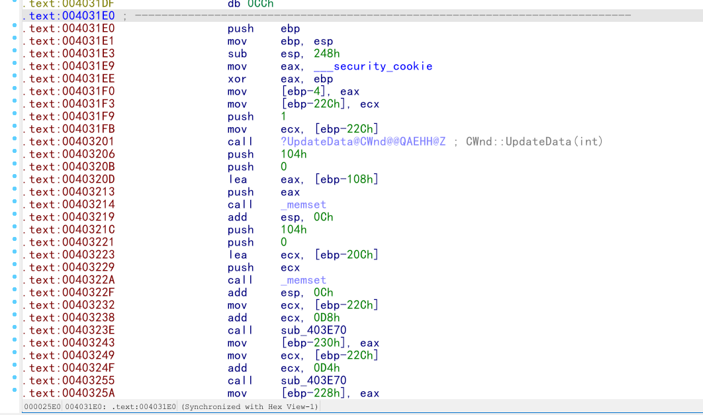
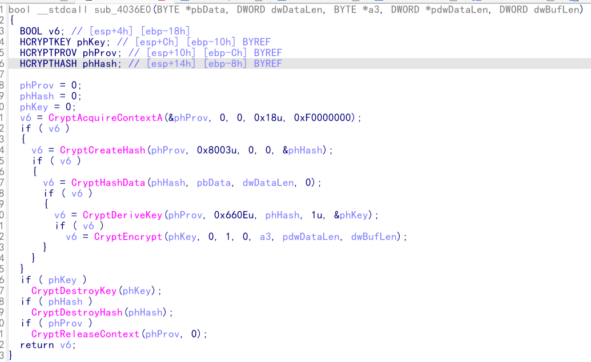
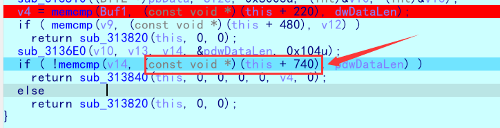

题目附件
# Crackme (MFC 逆向)
日常查壳
拖进 IDA，查找字符串 "wrong"，通过 xref 定位到主要函数

发现大段程序为分析，直接
U (转换成未定义) C (转换成代码)
P (在函数开始处使用 P，从当前地址处解析成函数)
F5 进入查看反汇编
进入加密函数查看
发现是微软官方的加解密函数 微软官方加解密库
通过查询 hash 编码就能知道加密方式
分析可知该函数为关键加密部分

进入之后发现整个函数都是通过调用官方库实现，所以可以直接套用该加密函数稍作修改得到最后的 exp
大概逻辑分析清楚后就需要动态调试得到
尝试在 IDA 里面动态调试，但是一直会在窗口程序调用之前弹飞，进入到 OD 里面调试也会跳飞
猜测可能有反调试技术
看过大佬视频讲解知道是
但是该函数在文件 import 表里没找到，猜测是作者自己手写的，然后搜索字符串，发现了该函数
也发现了能够绕过的关键代码 0x11，在此处下断点，然后运行，待程序运行到此处时，patch0x11 的值然后继续运行，查找到关键密钥。
MD5key = 'D59F8E94B0E1DE6E329518A0C444AA94DE7C8D44' ---------> 'NocT'
SHA1key = 'D59F8E94B0E1DE6E329518A0C444AA94DE7C8D44'
可以利用如下解密脚本解密
import hashlib | |
from Crypto.Util.number import long_to_bytes | |
import string | |
s = 'D59F8E94B0E1DE6E329518A0C444AA94DE7C8D44' | |
for a in string.ascii_letters: | |
for b in string.ascii_letters: | |
for c in string.ascii_letters: | |
for d in string.ascii_letters: | |
m = (a+b+c+d).encode() | |
# r1 =hashlib.md5 (a).digest () MD5 解密 | |
r2 = hashlib.sha1(m).hexdigest() #SHA1 解密 | |
if r2.upper()==s: | |
print(m) | |
#return b'uRne' |
所以 key = NocTuRne
因为原函数逻辑里面还要对整体的 keyMD5 加密再做后面的运算，所以
MD5_Org_key = '5C53A4A41D52437A9FA1E9C26CA59090'
接着还需要得到真正的加密后的 flag 的密文，

可以通过动调在这里得到，动调的时候得人工更改前面一个函数的跳转，以使其跳转到我们需要的函数。
得到
Encrypted_flag[] ={0x5B, 0x9C, 0xEE, 0xB2, 0x3B, 0xB7, 0xD7, 0x34, 0xF3, 0x1B, 0x75, 0x14, 0xC6, 0xB2, 0x1F, 0xE8, 0xDE, 0x33, 0x44, 0x74, 0x75, 0x1B, 0x47, 0x6A, 0xD4, 0x37, 0x51, 0x88, 0xFC, 0x67, 0xE6, 0x60, 0xDA, 0x0D, 0x58, 0x07, 0x81, 0x43, 0x53, 0xEA, 0x7B, 0x52, 0x85, 0x6C, 0x86, 0x65, 0xAF, 0xB4};
之后就可以写脚本直接解出 flag 了
#include <stdbool.h> | |
#include <windows.h> | |
#include <windef.h> | |
#include <wincrypt.h> | |
#include <stdio.h> | |
bool __stdcall encflag(BYTE *key, DWORD dwDataLen, BYTE *input, DWORD *pdwDataLen, DWORD dwBufLen) { | |
BOOL v6; | |
HCRYPTKEY phKey; | |
HCRYPTPROV phProv; | |
HCRYPTHASH phHash; | |
phProv = 0; | |
phHash = 0; | |
phKey = 0; | |
v6 = CryptAcquireContextA(&phProv, 0, 0, 0x18u, 0xF0000000); | |
if (v6) { | |
// CryptGetHashParam (phHash, 2u, key, (DWORD *) v8, 0); 在加密函数中会将 hash 值写入 key->addr 的值 | |
v6 = CryptCreateHash(phProv, 0x8003u, 0, 0, &phHash); | |
if (v6) { | |
v6 = CryptHashData(phHash, key, dwDataLen, 0); // 将 key 按 hashalg 生成 写入 key->addr | |
if (v6) { | |
v6 = CryptDeriveKey(phProv, 0x660Eu, phHash, 1u, &phKey); | |
CryptDecrypt(phKey, 0, 1, 0, input, pdwDataLen); | |
for (int i = 0; i < 32; ++i) { | |
putchar(input[i]); | |
} | |
} | |
} | |
} | |
if (phKey) | |
CryptDestroyKey(phKey); | |
if (phHash) | |
CryptDestroyHash(phHash); | |
if (phProv) | |
CryptReleaseContext(phProv, 0); | |
return v6; | |
} | |
void main() { | |
BYTE flag_data[] = {0x5B, 0x9C, 0xEE, 0xB2, 0x3B, 0xB7, 0xD7, 0x34, 0xF3, 0x1B, 0x75, 0x14, 0xC6, 0xB2, 0x1F, 0xE8, | |
0xDE, 0x33, 0x44, 0x74, 0x75, 0x1B, 0x47, 0x6A, 0xD4, 0x37, 0x51, 0x88, 0xFC, 0x67, 0xE6, 0x60, | |
0xDA, 0x0D, 0x58, 0x07, 0x81, 0x43, 0x53, 0xEA, 0x7B, 0x52, 0x85, 0x6C, 0x86, 0x65, 0xAF, 0xB4}; | |
BYTE keyBuf[] = {0x5c, 0x53, 0xa4, 0xa4, 0x1d, 0x52, 0x43, 0x7a, 0x9f, 0xa1, 0xe9, 0xc2, 0x6c, 0xa5, 0x90, 0x90}; // 就是 key 的 md5 | |
DWORD dwDataLen_2; | |
DWORD *pdwDataLen = &dwDataLen_2; | |
*pdwDataLen = 0x20; | |
encflag(keyBuf, 0x10, flag_data, pdwDataLen, 0x104); | |
} |
DASCTFH@sh_a
# 奇怪的交易
日常查壳
upx 壳，直接用 upx -d 命令解壳
之后拖进 IDA
发现反复出现该字符串，直接谷歌搜索
发现是 py 文件打包的工具，那就是 py 逆向，所以很可能需要我们手动解包
objcopy --dump-section pydata=unweird.dump unweird | |
#将文件包中关键的部分 dump 出来，之后进行处理 name 为要处理的文件名 |
python ./pyinstxtractor.py ./unweird.dump | |
# 将之前 dump 出的文件解包，得到一系列的 pyc 文件以及其他文件 |
./pycdc unweird.pyc | |
#将 name.pyc 反汇编成 py 源代码文件 | |
#or | |
./pycdas unweird.pyc | |
#将 name.pyc 文件反编译成 opcode 形式 |
在这里贴一个看雪大佬关于 python 解包的博客
py 文件解包以及 pyz 文件的处理
查看反汇编得到的代码，发现已知条件不足以让我们分析题目，
并且这里的 cup 库是关键，因为后面的 encrypt 部分牵扯到 cup 库
所以我们要继续解包
pyinstaller 有一个奇怪的地方，它会把主函数 pyc 文件的文件头进行更改，这里我们就可以用到上面那个文件夹里面一定会有的 struct.pyc 文件，这个文件的文件头一般是不会更改的，将这个文件的文件头进行复制然后更改主函数 pyc 文件头就可以了。
Pyinstaller 这个库本身的打包原理大概就是先将 py 编译成 pyc，然后部分压缩成 pyz，程序再通过对 pyc 和 pyz 的调用
pyinstaller 库中找到 archieve 这么一个文件夹，里面有一个 pyz_crypto.py 文件，是对 pyz 文件的加密代码
可以看出，他是使用的 tinyAES 库对 pyc 文件进行块加密，块大小为 16byte
我们已经根据源码知道了 pyz 加密方式和加密算法，所以根据解包后 pyc 文件提供的一系列参数，很容易就能编写出对应的解密脚本。
首先用 pyinstxtractor 工具对文件进行解包 (需软件对应相同的 python 大版本，否则无法得到 pyz 文件)，得到未被加密的部分 pyc 文件和加密的 pyz 文件，其中之一就有 archive.pyc, 我们可以通过 archive.pyc 文件得到加密过程，crypto_key 文件得到具体 key 参数
./python.exe ./pyinstxtractor.py ./name.dump | |
#必须使用与打包文件时使用的 python 版本对应的 python 大版本进行操作 | |
#得到 pyz 文件 | |
#后面就可以利用脚本将 pyz 文件转化成 pyc 文件 |
#!/usr/bin/env python3 | |
import tinyaes | |
import zlib | |
CRYPT_BLOCK_SIZE = 16 | |
# 从 crypt_key.pyc 获取 key，也可自行反编译获取 | |
key = bytes('0000000000000tea', 'utf-8') | |
inf = open('cup.pyc.encrypted', 'rb') # 打开加密文件 | |
outf = open('cup.pyc', 'wb') # 输出文件 | |
# 按加密块大小进行读取 | |
iv = inf.read(CRYPT_BLOCK_SIZE) | |
cipher = tinyaes.AES(key, iv) | |
# 解密 | |
plaintext = zlib.decompress(cipher.CTR_xcrypt_buffer(inf.read())) | |
# 补 pyc 头 (最后自己补也行) | |
outf.write(b'\x6f\x0d\x0f\x0a\00\00\00\00\x70\x79\x69\x30\x01\x01\x00\x00') | |
# 写入解密数据 | |
outf.write(plaintext) | |
inf.close() | |
outf.close() |
接着再 pyz 中找到 cup.pyc.encrypt 文件，这就是 cup 库文件加密生成的 pyz 文件，然后利用上面的脚本解密得到 cup.pyc.
接着就可以用在线工具反编译得到 cup
#!/usr/bin/env python | |
# visit https://tool.lu/pyc/ for more information | |
# Version: Python 3.10 | |
import libnum | |
from ctypes import * | |
def MX(z, y, total, key, p, e): | |
temp1 = (z.value >> 5 ^ y.value << 2) + (y.value >> 3 ^ z.value << 4) | |
temp2 = (total.value ^ y.value) + (key[p & 3 ^ e.value] ^ z.value) | |
return c_uint32(temp1 ^ temp2) | |
def encrypt(ᘗ, ᘖ, ᘘ): | |
ᘜ = 0x9E3779B9L | |
ᘛ = 6 + 52 // ᘗ | |
total = c_uint32(0) | |
ᘔ = c_uint32(ᘖ[ᘗ - 1]) | |
ᘕ = c_uint32(0) | |
if ᘛ > 0: | |
total.value += ᘜ | |
ᘕ.value = total.value >> 2 & 3 | |
ᘚ = c_uint32(ᘖ[0]) | |
ᘖ[ᘗ - 1] = c_uint32(ᘖ[ᘗ - 1] + MX(ᘔ, ᘚ, total, ᘘ, ᘗ - 1, ᘕ).value).value | |
ᘔ.value = ᘖ[ᘗ - 1] | |
ᘛ -= 1 | |
if not ᘛ > 0: | |
return ᘖ |
发现就是一个 XXTEA, 甚至没有魔改
程序逻辑是，RSA 加密和 XXTEA 加密
#include <stdio.h> | |
#include <stdint.h> | |
#define KEYLEN 4 | |
#define DELTA 0x9e3779b9 | |
#define LUN 32 | |
void Encrypt(unsigned int * v, unsigned int * k); | |
void Decrypt(unsigned int * v, unsigned int * k); | |
#define MX (((z>>5^y<<2) + (y>>3^z<<4)) ^ ((sum^y) + (key[(p&3)^e] ^ z))) | |
void btea(uint32_t *v, int n, uint32_t const key[4]) | |
{ | |
uint32_t y, z, sum; | |
unsigned p, rounds, e; | |
if (n > 1) /* Coding Part */ | |
{ | |
rounds = 6 + 52/n; | |
sum = 0; | |
z = v[n-1]; | |
do | |
{ | |
sum += DELTA; | |
e = (sum >> 2) & 3; | |
for (p=0; p<n-1; p++) | |
{ | |
y = v[p+1]; | |
z = v[p] += MX; | |
} | |
y = v[0]; | |
z = v[n-1] += MX; | |
} | |
while (--rounds); | |
} | |
else if (n < -1) /* Decoding Part */ | |
{ | |
n = -n; | |
rounds = 6 + 52/n; | |
sum = rounds*DELTA; | |
y = v[0]; | |
do | |
{ | |
e = (sum >> 2) & 3; | |
for (p=n-1; p>0; p--) | |
{ | |
z = v[p-1]; | |
y = v[p] -= MX; | |
} | |
z = v[n-1]; | |
y = v[0] -= MX; | |
sum -= DELTA; | |
} | |
while (--rounds); | |
} | |
} | |
int main(void) | |
{ | |
uint32_t v[] = { 0xD28ED952, 1472742623, 0xD91BA938, 0xF9F3BD2D, 0x8EF8E43D, 617653972, 1474514999, 1471783658, 1012864704, 0xD7821910, 993855884, 438456717, 0xC83555B7, 0xE8DFF468, 198959101, 0xC5B84FEB, 0xD9F837C6, 613157871, 0x8EFA4EDD, 97286225, 0x8B4B608C, 1471645170, 0xC0B62792, 583597118, 0xAAB1C22D, 0xBDB9C266, 1384330715, 0xAE9F9816, 0xD1F40B3C, 0x8206DDC3, 0xC4E0BADC, 0xE407BD26, 145643141, 0x8016C6A5, 0xAF4AB9D3, 506798154, 994590281, 0x85082A0B, 0xCA0BC95A, 0xA7BE567C, 1105937096, 1789727804, 0xDFEFB591, 0x93346B38, 1162286478, 680814033, 0xAEE1A7A2, 0x80E574AE, 0xF154F55F, 2121620700, 0xFCBDA653, 0x8E902444, 0xCA742E12, 0xB8424071, 0xB4B15EC2, 0x943BFA09, 0xBC97CD93, 1285603712, 798920280, 0x8B58328F, 0xF9822360, 0xD1FD15EE, 1077514121, 1436444106, 0xA2D6C17E, 1507202797, 500756149, 198754565, 0x8E014807, 880454148, 1970517398, 0xBFC6EE25, 1161840191, 560498076, 1782600856, 0x9D93FEBE, 1285196205, 788797746, 1195724574, 0xF2174A07, 103427523, 0x952BFE83, 0xF730AC4C, 617564657, 978211984, 1781482121, 0x8379D23A, 0xEAD737EE, 0xE41555FB, 659557668, 0x99F3B244, 1561884856, 0x842C31A4, 1189296962, 169145316, 0xA5CE044C, 1323893433, 824667876, 408202876, 0xE0178482, 0xF412BBBC, 1508996065, 162419237, 0xDE740B00, 0xB7CB64FD, 0xEBCADB1F, 0x8EAE2326, 0x933C216C, 0xD7D1F649, 481927014, 0xA448AC16, 0xBC082807, 1261069441, 2063238535, 0x8474A61D, 101459755, 0xBC5654D1, 1721190841, 1078395785, 176506553, 0xD3C5280F, 1566142515, 1938949000, 1499289517, 0xC59872F8, 829714860, 0xE51502A2, 952932374, 1283577465, 2045007203, 0xEBE6A798, 0xE09575CD, 0xADDF4157, 0xC4770191, 482297421, 1734231412, 0xDAC71054, 0x99807E43, 0xA88D74B1, 0xCB77E028, 1533519803, 0xEEEBC3B6, 0xE7E680E5, 272960248, 317508587, 0xC4B10CDC, 0x91776399, 27470488, 1666674386, 1737927609, 750987808, 0x8E364D8F, 0xA0985A77, 562925334, 0x837D6DC3, 0 }, k[KEYLEN] = { 54, 54, 54, 54 }; | |
int i, index; | |
int n = 155; | |
btea(v, -n, k); | |
unsigned char * p = (unsigned char *)v; | |
for ( i = 0, index = 0; index < n; i += 4, index++ ) | |
printf("%c%c%c%c", p[i + 3], p[i + 2], p[i + 1], p[i]); | |
return 0; | |
} | |
////10610336534759505889607399322387179316771488492347274741918862678692508953185876570981227584004676580623553664818853686933004290078153620168054665086468417541382824708104480882577200529822968531743002301934310349005341104696887943182074473298650903541494918266823037984054778903666406545980557074219162536057146090758158128189406073809226361445046225524917089434897957301396534515964547462425719205819342172669899546965221084098690893672595962129879041507903210851706793788311452973769358455761907303633956322972510500253009083922781934406731633755418753858930476576720874219359466503538931371444470303193503733920039 |
由于 e 指数过大，拿到密文直接拉去 RSA 维纳攻击
import gmpy2 | |
import libnum | |
def continuedFra(x, y): | |
cf = [] | |
while y: | |
cf.append(x // y) | |
x, y = y, x % y | |
return cf | |
def gradualFra(cf): | |
numerator = 0 | |
denominator = 1 | |
for x in cf[::-1]: | |
# 这里的渐进分数分子分母要分开 | |
numerator, denominator = denominator, x * denominator + numerator | |
return numerator, denominator | |
def solve_pq(a, b, c): | |
par = gmpy2.isqrt(b * b - 4 * a * c) | |
return (-b + par) // (2 * a), (-b - par) // (2 * a) | |
def getGradualFra(cf): | |
gf = [] | |
for i in range(1, len(cf) + 1): | |
gf.append(gradualFra(cf[:i])) | |
return gf | |
def wienerAttack(e, n): | |
cf = continuedFra(e, n) | |
gf = getGradualFra(cf) | |
for d, k in gf: | |
if k == 0: continue | |
if (e * d - 1) % k != 0: | |
continue | |
phi = (e * d - 1) // k | |
p, q = solve_pq(1, n - phi + 1, n) | |
if p * q == n: | |
return d | |
n=12702192797044914024075774649965354105344232304099465264316470282606351700311177624703682814557100043599414982439635470829841890299241342602374578366076034128412992290094164613120745611751102797279925764448133764246126488845600641524814194290745105708735258127757986238766868988676022258542038318776640732920027324986285887310132372524224961045858183153047991881042129131551711617627844146600513830709959185824512201669420128585170924683844128155435146399996585220865423125338735154727569986267948480523307784641442521735105741341230032585576300299944879647981670048377150556292280650846158185797588466680532743801893 | |
e=12680615221091469696163926483122992106481999501435284497098601343706982733487916553201934931961274845294041438909951977672521864927961654544622905443692482152403380984734291652023321187458458985625147422841102922314725726207365632256563373977251725785357590588556314671253970422319546403985257810950046085994573229162322957630767327089195523762665081311711474689269184996318744510300057603532953644164998953897411177604349567514705039306693117602798453972917348902600111420473965929048876821563646206875034926505783009957256212261250539005023918242209009676914632796839852778318989278092929214021282438144809708279435 | |
c=10610336534759505889607399322387179316771488492347274741918862678692508953185876570981227584004676580623553664818853686933004290078153620168054665086468417541382824708104480882577200529822968531743002301934310349005341104696887943182074473298650903541494918266823037984054778903666406545980557074219162536057146090758158128189406073809226361445046225524917089434897957301396534515964547462425719205819342172669899546965221084098690893672595962129879041507903210851706793788311452973769358455761907303633956322972510500253009083922781934406731633755418753858930476576720874219359466503538931371444470303193503733920039 | |
d=wienerAttack(e, n) | |
m=pow(c, d, n) | |
print(libnum.n2s(m).decode()) |